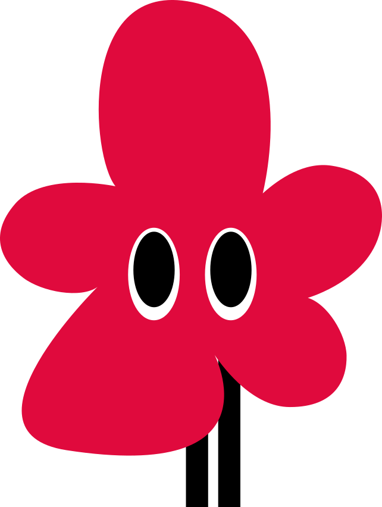

ITASO · JUEGO PARA CUIDADORES
Un día de decisiones
Acompaña a la mascota de Itaso en tres momentos cotidianos de cuidado.
- Elige una opción para la mañana, la tarde y la noche.
- Después de cada elección verás una explicación y una idea práctica.
- Al final conocerás el puntaje de la partida. La semana y su historial son opcionales.
Los puntos pertenecen al juego; no miden la salud del niño ni la calidad del cuidado.
Una decisión para hoy
Una idea sobre esta opción
Una idea práctica
Así cerramos el día
Los puntos son parte del juego; no miden la salud del niño ni la calidad del cuidado.
Una idea para probar hoy
No se pudo guardar en este navegador. Puedes seguir jugando mientras mantengas esta página abierta.